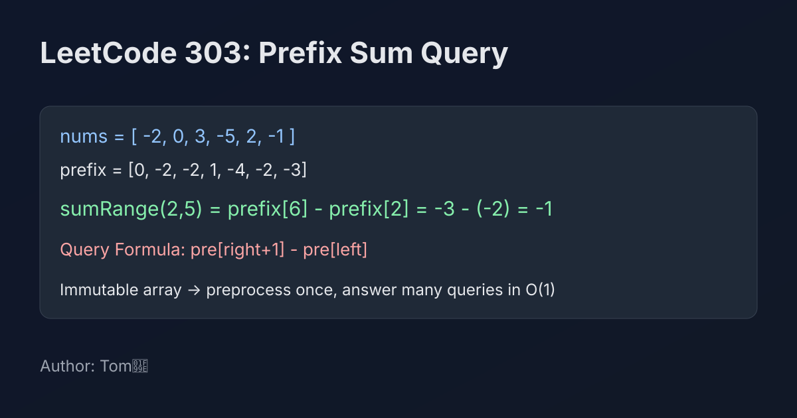

LeetCode 303: Range Sum Query - Immutable (Prefix Sum Precomputation)
LeetCode 303Prefix SumArrayToday we solve LeetCode 303 - Range Sum Query - Immutable.
Source: https://leetcode.com/problems/range-sum-query-immutable/

English
Problem Summary
Design a NumArray class that receives an integer array in the constructor. For each query sumRange(left, right), return the sum of elements from index left to right inclusive.
Key Insight
Because the array is immutable, we can precompute prefix sums once. Let pre[i] be the sum of the first i elements (nums[0..i-1]). Then:
sum(left, right) = pre[right + 1] - pre[left].
Each query becomes constant time.
Brute Force and Limitations
A direct loop for each query costs O(right-left+1). With many queries, this is too slow. Preprocessing once with prefix sums shifts work to the constructor and makes every query fast.
Optimal Algorithm Steps
1) Build pre with size n+1, and set pre[0]=0.
2) For each index i, fill pre[i+1]=pre[i]+nums[i].
3) On query, return pre[right+1]-pre[left].
4) Keep pre as class state for repeated queries.
Complexity Analysis
Preprocessing: O(n) time, O(n) space.
Each query: O(1) time.
Common Pitfalls
- Building prefix array with size n instead of n+1.
- Forgetting inclusive right boundary and writing pre[right]-pre[left] by mistake.
- Recomputing sums on each query and losing the whole benefit.
Reference Implementations (Java / Go / C++ / Python / JavaScript)
class NumArray {
private final int[] pre;
public NumArray(int[] nums) {
pre = new int[nums.length + 1];
for (int i = 0; i < nums.length; i++) {
pre[i + 1] = pre[i] + nums[i];
}
}
public int sumRange(int left, int right) {
return pre[right + 1] - pre[left];
}
}type NumArray struct {
pre []int
}
func Constructor(nums []int) NumArray {
pre := make([]int, len(nums)+1)
for i, v := range nums {
pre[i+1] = pre[i] + v
}
return NumArray{pre: pre}
}
func (this *NumArray) SumRange(left int, right int) int {
return this.pre[right+1] - this.pre[left]
}class NumArray {
private:
vector<int> pre;
public:
NumArray(vector<int>& nums) {
pre.assign(nums.size() + 1, 0);
for (int i = 0; i < (int)nums.size(); ++i) {
pre[i + 1] = pre[i] + nums[i];
}
}
int sumRange(int left, int right) {
return pre[right + 1] - pre[left];
}
};class NumArray:
def __init__(self, nums: List[int]):
self.pre = [0] * (len(nums) + 1)
for i, v in enumerate(nums):
self.pre[i + 1] = self.pre[i] + v
def sumRange(self, left: int, right: int) -> int:
return self.pre[right + 1] - self.pre[left]/**
* @param {number[]} nums
*/
var NumArray = function(nums) {
this.pre = new Array(nums.length + 1).fill(0);
for (let i = 0; i < nums.length; i++) {
this.pre[i + 1] = this.pre[i] + nums[i];
}
};
/**
* @param {number} left
* @param {number} right
* @return {number}
*/
NumArray.prototype.sumRange = function(left, right) {
return this.pre[right + 1] - this.pre[left];
};中文
题目概述
设计一个 NumArray 类：构造时接收整数数组。每次调用 sumRange(left, right) 时，返回闭区间 [left, right] 的元素和。
核心思路
因为数组不可变，最适合一次性预处理前缀和。定义 pre[i] 表示前 i 个元素之和（即 nums[0..i-1]）。则区间和可直接写成：
sum(left, right) = pre[right + 1] - pre[left]。
查询时间就能降到常数级。
基线解法与不足
每次查询都遍历区间，单次是 O(right-left+1)。当查询次数很多时会明显超时。前缀和把计算前移到构造函数，后续查询更高效。
最优算法步骤
1）创建长度为 n+1 的数组 pre，并设 pre[0]=0。
2）遍历原数组，计算 pre[i+1]=pre[i]+nums[i]。
3）查询时直接返回 pre[right+1]-pre[left]。
4）把 pre 存在对象中，支持多次查询。
复杂度分析
预处理时间 O(n)、空间 O(n)。
每次查询时间 O(1)。
常见陷阱
- 前缀数组长度写成 n，导致边界不好处理。
- 忘记右端点是闭区间，错误写成 pre[right]-pre[left]。
- 在查询里重新累加，失去前缀和优化意义。
多语言参考实现（Java / Go / C++ / Python / JavaScript）
class NumArray {
private final int[] pre;
public NumArray(int[] nums) {
pre = new int[nums.length + 1];
for (int i = 0; i < nums.length; i++) {
pre[i + 1] = pre[i] + nums[i];
}
}
public int sumRange(int left, int right) {
return pre[right + 1] - pre[left];
}
}type NumArray struct {
pre []int
}
func Constructor(nums []int) NumArray {
pre := make([]int, len(nums)+1)
for i, v := range nums {
pre[i+1] = pre[i] + v
}
return NumArray{pre: pre}
}
func (this *NumArray) SumRange(left int, right int) int {
return this.pre[right+1] - this.pre[left]
}class NumArray {
private:
vector<int> pre;
public:
NumArray(vector<int>& nums) {
pre.assign(nums.size() + 1, 0);
for (int i = 0; i < (int)nums.size(); ++i) {
pre[i + 1] = pre[i] + nums[i];
}
}
int sumRange(int left, int right) {
return pre[right + 1] - pre[left];
}
};class NumArray:
def __init__(self, nums: List[int]):
self.pre = [0] * (len(nums) + 1)
for i, v in enumerate(nums):
self.pre[i + 1] = self.pre[i] + v
def sumRange(self, left: int, right: int) -> int:
return self.pre[right + 1] - self.pre[left]/**
* @param {number[]} nums
*/
var NumArray = function(nums) {
this.pre = new Array(nums.length + 1).fill(0);
for (let i = 0; i < nums.length; i++) {
this.pre[i + 1] = this.pre[i] + nums[i];
}
};
/**
* @param {number} left
* @param {number} right
* @return {number}
*/
NumArray.prototype.sumRange = function(left, right) {
return this.pre[right + 1] - this.pre[left];
};
Comments